Las mujeres han vivido situaciones de subordinación y exclusión respecto a
los
hombres; esto ha generado que no puedan ejercer sus derechos, en igualdad de condiciones.
El reconocimiento de los derechos humanos de este grupo, ha significado una lucha tenaz y
de
gran esfuerzo por parte de muchas mujeres, a lo largo de la historia.
Situación de vulnerabilidad
Personas y grupos en situación de vulnerabilidad
En un mundo ideal, todas las personas tendrían no sólo los mismos derechos, sino la posibilidad real
de
ejercerlos en igualdad de condiciones y oportunidades, sin distinción por causa alguna, mucho menos
por
aquellos motivos propios de la esencia humana, la cual hace a cada persona ser quien es.
No obstante, todos los días el ser humano enfrenta la desigualdad. El miedo a aquello que le resulta
diferente provoca rechazo, discriminación, intolerancia u otras formas de violencia.
El desarrollo histórico de los derechos humanos puede entenderse a través de un cuádruple proceso.
Pulsar en cada apartado para ver la información.
Incorporación de los derechos humanos a las constituciones de los Estados.
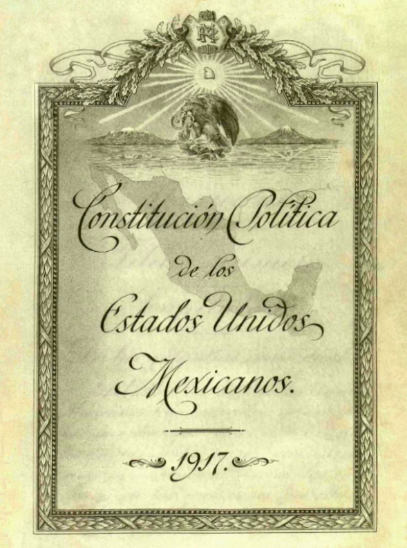
(s. a.) (2011). Portada interior original de la Constitución de 1917 [fotografía]. Tomada de https://es.wikipedia.org/wiki/Archivo:Portada_Interior_Original_de_la_Constitucion_de_1917.png
Extensión a todos los humanos de un número cada vez más amplio de derechos.
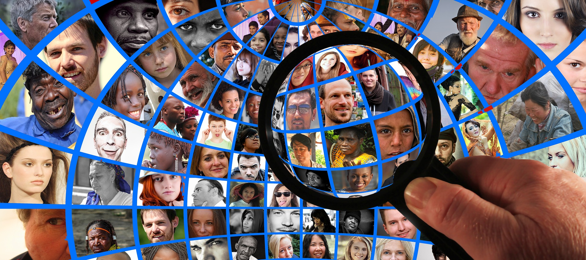
Altmann, G. (2016). Proceso de generalización de los derechos humanos [collage]. Tomado de https://pixabay.com/en/magnifying-glass-human-head-faces-1607208/
Desbordamiento del referente de los Estados, en el marco de la comunidad internacional.
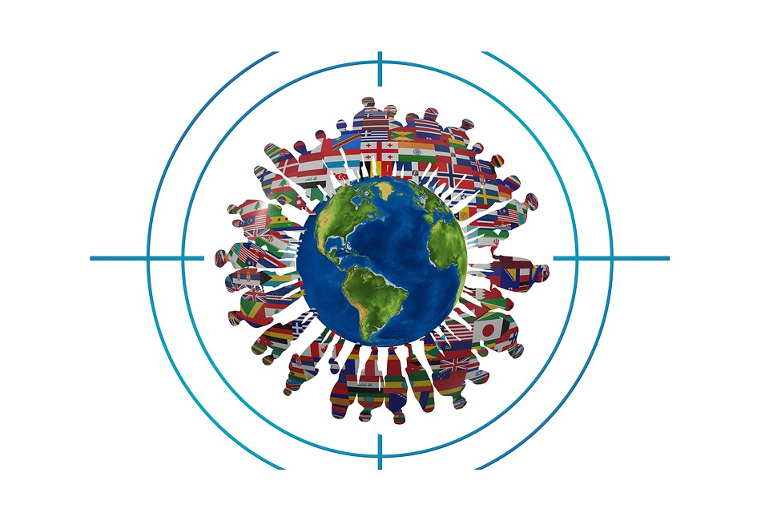
Altmann, G. (2018). Proceso de internacionalización de los derechos humanos [ilustración]. Tomada de https://pixabay.com/en/flags-personal-about-world-earth-3280311/
Determinación de los derechos para titulares específicos: mujeres, personas jóvenes, pueblos indígenas, poblaciones afrodescendientes, personas con discapacidad, personas migrantes, entre otros colectivos.
Este proceso se vincula con la identificación de la población o grupos en situación de vulnerabilidad que buscan reconocimiento específico para el ejercicio de sus derechos humanos.
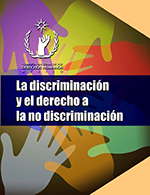
Comisión Nacional de los Derechos Humanos (2012). Portada del libro “La discriminación y el derecho a la no discriminación” [fotografía]
Explicación
Los grupos en situación de vulnerabilidad son aquéllos que, debido al menosprecio generalizado por alguna condición específica que comparten, un prejuicio social erigido en torno a ellos, o por una situación histórica de opresión o injusticia, se ven afectados sistemáticamente en el disfrute y ejercicio de sus derechos humanos.
Asimismo, se han detectado grupos o poblaciones que deben contar con un trato diferenciado en razón de sus características específicas, por ejemplo, las niñas, niños y adolescentes. A estos grupos se les han denominado “de atención prioritaria”.
En estos casos, se busca hacer visibles las diferencias y circunstancias específicas de cada persona, para determinar la forma en la que se le deben garantizar sus derechos humanos; no obstante, esto no debe confundirse con la conducta discriminatoria, la cual se traduce en diferentes formas de trato injusto e inmerecido, debido a prejuicios, estereotipos y estigmas que justifican las desigualdades sociales.
La discriminación constituye un obstáculo para el pleno desarrollo de las personas y, por tanto, para la tutela de la dignidad.
Algunos ejemplos claros de conductas discriminatorias son los siguientes:
Pulsa cada conducta para ver la información.
Impedir el acceso a la educación pública o privada por tener una discapacidad, otra nacionalidad o credo religioso.
Prohibir la libre elección de empleo o restringir las oportunidades de acceso, permanencia y ascenso, por ejemplo, a consecuencia de la corta o avanzada edad.
Establecer diferencias entre los salarios, prestaciones y condiciones laborales para trabajos iguales, como puede ocurrir con las mujeres frente a los hombres.
Video
Observa el video y conoce los 30 derechos establecidos en la Declaración Universal de Derechos Humanos.

Para saber más...
La vulnerabilidad no es una condición personal, es decir, no se trata de la característica de un ser humano. Las personas no son por sí mismas “vulnerables”, “débiles” o “indefensas”, sino que, por una condición particular, se enfrentan a un entorno que injustamente restringe o impide el desarrollo de uno o varios aspectos de su vida, de manera que se ven sujetas a una situación de vulnerabilidad y, por lo tanto, a un mayor riesgo de ver sus derechos afectados.
En virtud de lo anterior, se hablará siempre de grupos o personas en situación de vulnerabilidad, y no de “personas o grupos vulnerables”, el cual resulta un término discriminatorio e inexacto.
En mayor o menor medida, todas las personas pueden estar en riesgo de que sus derechos sean violados. Existen ciertas características o condiciones en virtud de las cuales, determinados sectores de la población pueden presentar mayor riesgo ante dichas violaciones, es decir, mayor vulnerabilidad. A continuación, se muestran algunos ejemplos:
Grupos o personas en situación de vulnerabilidad
Coloca el cursor sobre la imagen, para ver la información.
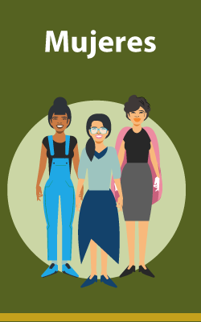
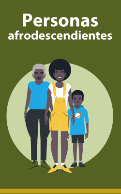
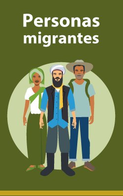
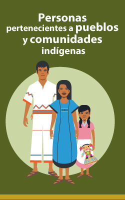
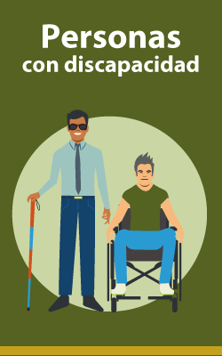
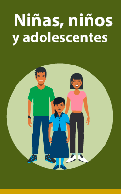
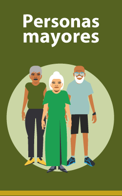
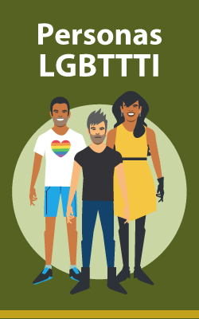
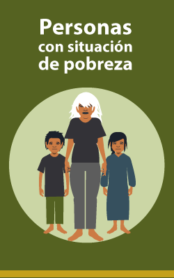
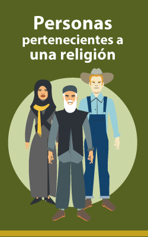
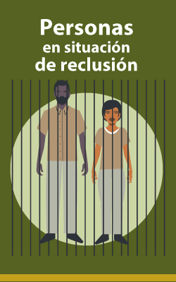
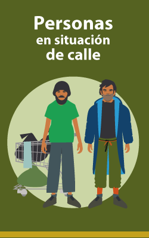
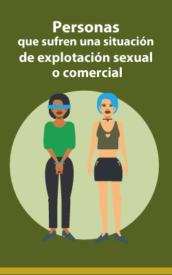
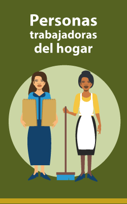
Reflexión
En suma, la vulnerabilidad es una situación de desventaja, ya que toda persona o grupo de personas en esa condición, quedan injustamente en riesgo de sufrir discriminación o la grave violación de sus derechos humanos. Si se trabajara por una verdadera igualdad, se lograría disminuir las condiciones materiales que sujetan a las personas a vulnerabilidad; además, se acabaría con los estereotipos que someten a la identidad a criterios de aceptación que, por sí mismos, son contrarios a la dignidad humana.